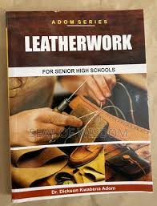

A student admired a beautiful leather bag and wondered how it was made. Behind every quality leather product is creativity, craftsmanship, design, and business. Leatherwork transforms raw materials into products people use every day.
Leatherwork is the art and craft of designing and producing products from leather and similar materials. It combines creativity, technical skills, product design, and entrepreneurship.
Many students think Leatherwork is only about making sandals or bags. In reality, leather products form part of a multi-billion-dollar global industry that includes fashion, luxury products, manufacturing, branding, and exports.
This is only a small introduction. If you want to understand how programmes connect to university courses, careers, opportunities, and future success, get a copy of:
The guide designed to help students make informed decisions about their future and discover opportunities they may never have considered.